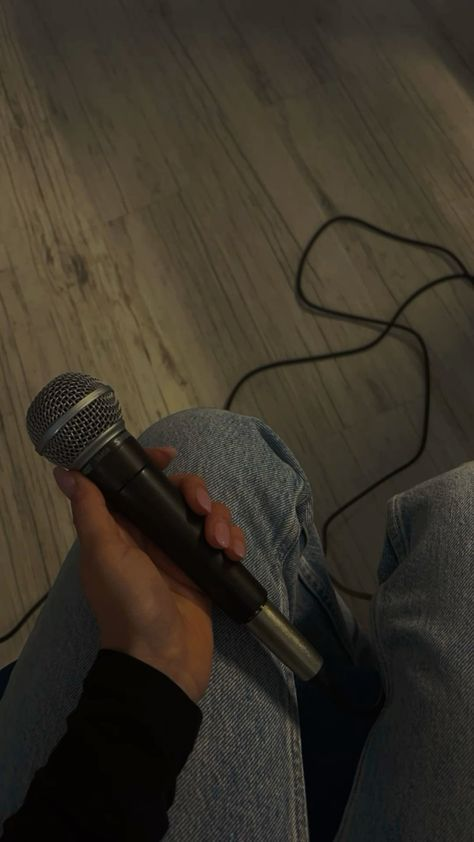
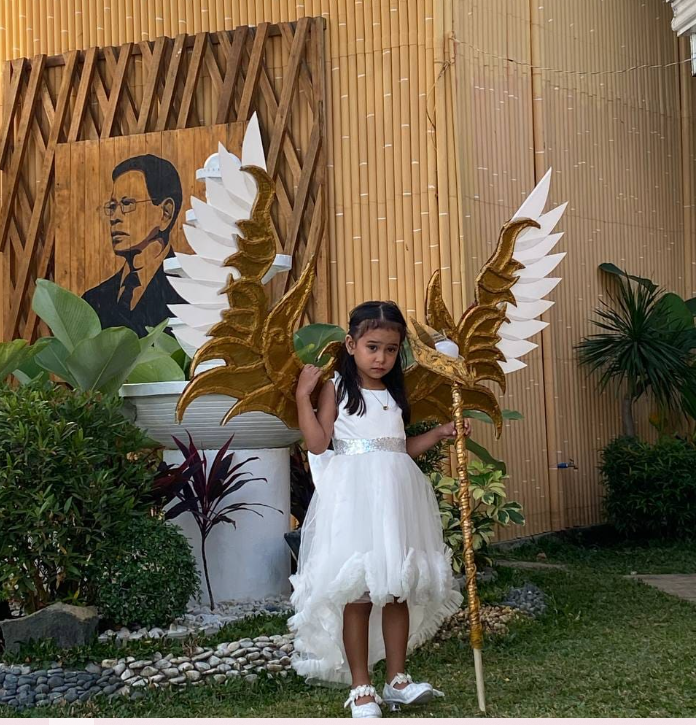
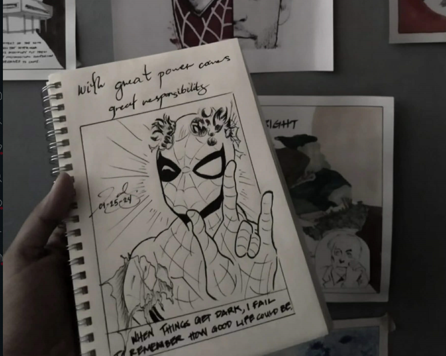
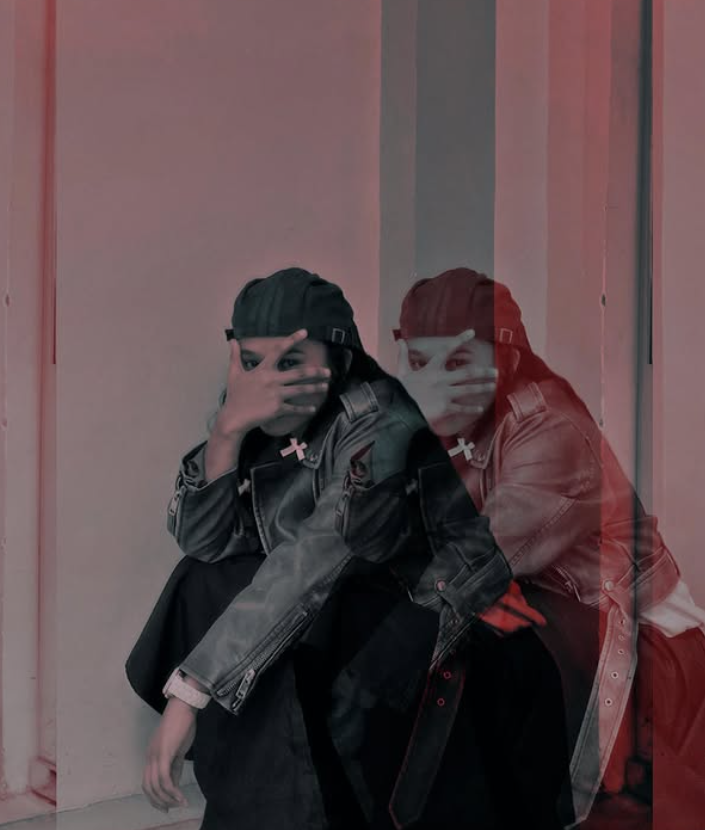
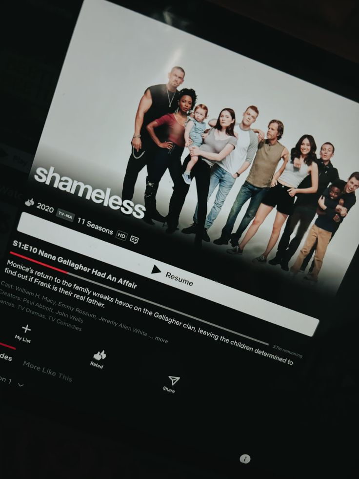

My name is Joulymae Epili Tamayo. You can call me Ae for short. I am a nursing student who values compassion, discipline, and growth.
Im a thinker and a feeler—a poet in my own way. I’m expressive, practical, and guided by both logic and emotion. As a Virgo and the eldest of five siblings,
I naturally take responsibility and value organization, growth, and purpose in everything I do.
Hobbies
Singing

I love expressing emotions through music.
Designing

I love designing, in terms of houses, clothes and costumes.
Drawing

Creativity through sketches.
Modeling

I enjoy modeling as it helps me express myself.
Watching

A way explore different stories and enjoy my free time.
Goals
My goal is to become a registered nurse, get a good job, and live a stable life.
I also dream of buying a Harley-Davidson motorcycle, build my own house, and achieve financial independence.
Above all, I want to live a life that I am proud of — successful, stable, and able to give back to the people who supported me.
Education
Primary
Four Shepherd Divine Academy (4SDA)
2009–2016
Secondary
Junior High: Rebeca Ernesto Camilo (REC)
S.Y. 20216-2020
Senior High: Antipolo City Senior High School
Technology and Livelihood Education
S.Y. 2020-2022
Tertiary
Bachelor of Science in Nursing
World Citi Colleges
2023–2028